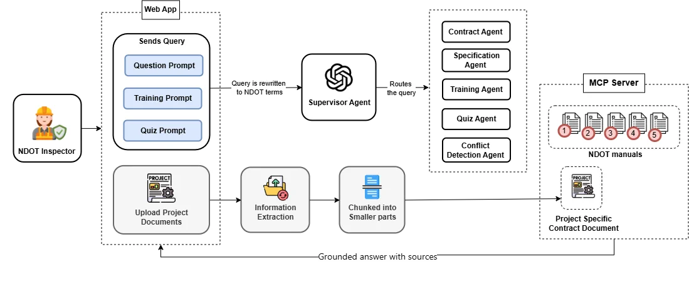
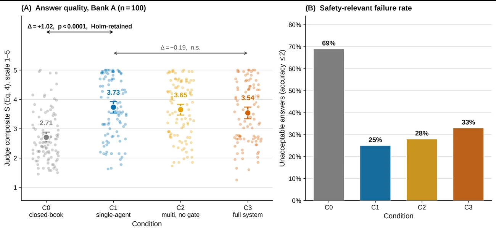
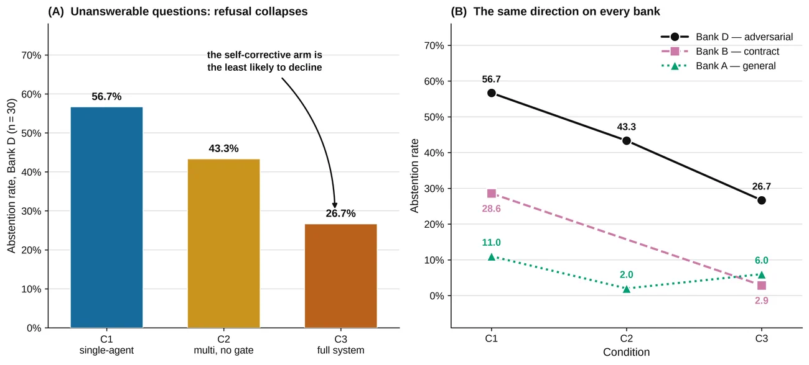

Evaluating Multi-Agent and Single-Agent RAG Frameworks for Highway Construction Inspector Training
Irfan Gazi, Kyungki Kim, Chun-Hsing (Jun) Ho
Transportation Research Board Annual Meeting · 2027 · Accepted
Abstract
State highway agencies face a shortage of experienced construction inspectors, and large language models offer a way to put inspection manuals in a trainee’s hands. An ungrounded model, however, can give confident and unsafe answers, and it is unclear whether more elaborate agent designs help. This study compares a closed-book LLM, a single-agent retrieval-augmented generation (RAG) system and multi-agent RAG variants on Nebraska Department of Transportation (NDOT) inspection questions, including unanswerable questions the system should decline. In the multi-agent design, a supervisor agent rewrites each question and routes it to contract, specification, training, quiz and conflict-detection sub-agents, which query NDOT manuals and project documents on an MCP server. Grounding made the largest difference: answer quality rose from 2.71 for the closed-book model to 3.73 for single-agent RAG, and the safety-relevant failure rate fell from 69% to 25%. Adding agent orchestration did not improve final answer quality, and the failure rate rose again to 33% for the full multi-agent system. Appropriate refusals on unanswerable questions fell from 56.7% to 26.7% as agents were added. For inspector training, a single grounded agent delivers most of the benefit at lower complexity.
Multi-Agent Framework
A supervisor agent rewrites the inspector’s question and routes it to sub-agents for contracts, specifications, training, quizzes and conflict detection. Each sub-agent queries NDOT manuals and project documents on an MCP server and returns a grounded answer with sources.

Results


BibTeX
@inproceedings{gazi2027rag,
title = {Evaluating Multi-Agent and Single-Agent RAG Frameworks for
Highway Construction Inspector Training},
author = {Gazi, Irfan and Kim, Kyungki and Ho, Chun-Hsing},
booktitle = {Transportation Research Board Annual Meeting},
year = {2027},
note = {Accepted}
}